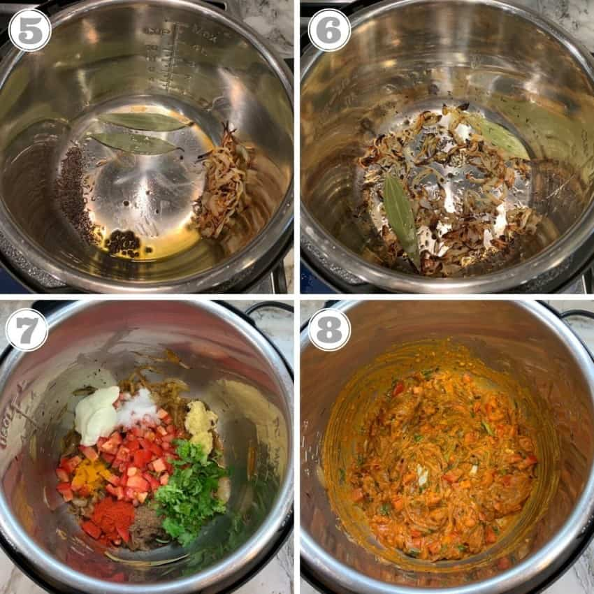

Before I get into the Egg Biryani, here is my Instant Pot recipe for perfect hard-boiled eggs that are easy to peel:
1.Add 1 cup of water to the Instant Pot.2.Place the Instant Pot trivet and place eggs on top of it. I like to use 6 eggs for this recipe.
3.Close the Instant Pot lid and turn the pressure release valve to sealing.
4.Pressure cook for 5 minutes followed by 5 minutes of natural pressure release
5.Release the remaining pressure by turning the pressure release valve from sealing to venting.
6.Using heat-resistant mitts take out the inner pot and place it under running cold water for 2 to 3 minutes.
7.Peel the eggs and make 3 shallow slits on each egg to use in egg biryani.
Once you have the eggs peeled and ready, making Egg Biryani is super easy
Step-by-step egg biryani recipe
Step 1: Rinse the rice and soak in 4 cups of water for 20 minutes. Drain all the water after 20 minutes.
Step 2 : Set the Instant Pot to saute mode and add ghee. Add onions and saute until they turn light golden brown, about 10 minutes.
Step 3: Take half of the onions out and reserve. Deglaze the bottom of the pot to remove any browning from sauteeing the onions.
Use 1 to 2 tablespoons of water to help remove any stuck browned bits as this will help the Instant Pot come to pressure properly. Add cumin seeds, black peppercorns, and bay leaves, and saute for a minute. Turn the Instant Pot off and add red chili powder, turmeric, salt, garam masala, ginger, garlic, mint, cilantro, tomatoes, and yogurt. Mix well.

Step 4: Add eggs and mix, coating the eggs with spices. Add rice over and spread it evenly. Add 2 cups of water and stir gently making sure most of the rice is under liquids.
Step 5: Close the Instant Pot with pressure valve to sealing. Pressure Cook (Low) for 5 minutes followed by 5 minutes of natural pressure release. Release the remaining pressure and open the Instant Pot. Layer the reserved caramelized onions and saffron milk evenly on top. Garnish with remaining cilantro.